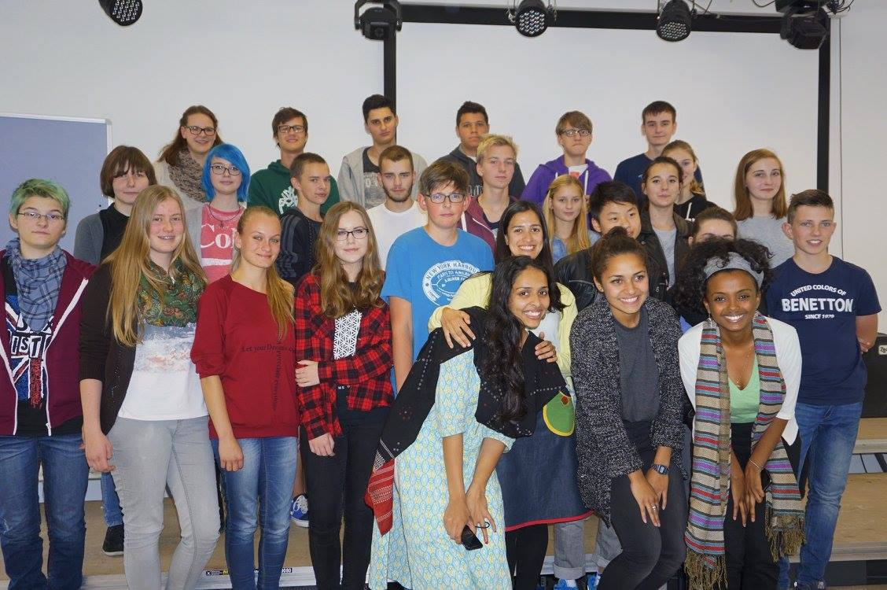
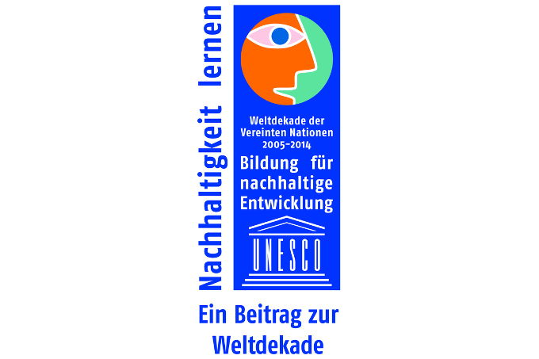

In Deutschland - Bridging Cultures
Der Bildungsansatz Globales Lernen und die Vermittlung
entwicklungspolitischer sowie interkultureller Themen sind von besonderer
Bedeutung, um das Bewusstsein von Schüler*innen zu fördern und sie für spezifische Globalisierungsprozesse zu sensibilisieren. Das Schulprojekt "Bridging Cultures" setzt hier an.
Das Bildungsprojekt fand zum
ersten Mal 2010 an Berliner und Brandenburger Gymnasien und Oberschulen von
September bis November statt.
Die
zweitägigen Workshops bestehen aus mehreren Lehr- und Informationseinheiten sowie Projektarbeit.
Thematisch beschäftigen sich die Schüler*innen mit Globalisierung, den Sustainable Development Goals sowie entwicklungspolitischen Schlüsselproblemen
der sogenannten Entwicklungskontinente Afrika, Asien und Lateinamerika. Innovative
pädagogische Ansätze wie projektorientierter Unterricht und die kooperative Lernform (Gruppen- und
Partnerarbeit) werden genutzt, indem sich die Schüler*innen intensiv mit den
Schlüsselproblemen auseinandersetzen, in Eigeninitiative kreative
Lösungsvorschläge für eine mögliche Projektarbeit erarbeiten und sie in originellen Präsentationen (Rollenspiele, musikalische Darbietungen, Werbefilme, etc.) im Plenum vorstellen.
ZIELE:
Während der Workshops erhalten die Schüler*innen
Informationen, die das Bewusstsein für globale Zusammenhänge und
Zukunftsperspektiven stärken und sie gleichermaßen motivieren selbst sozial aktiv
zu werden. Es sollen zudem kulturelle Aspekte jedes Kontinentes wie Musik,
Traditionen, Essen und Lebensart unterstrichen werden, um das Interesse und die
Neugier für diese Länder zu wecken. Die vermittelten sozialen,
wirtschaftlichen, entwicklungspolitische und kulturellen Themen sollen das
Gesamtbild einer globalisierten Welt vermitteln.
Im
Jahre 2011 erhielt das Projekt die Auszeichnung der UNESCO für "Bildung
für nachhaltige Entwicklung" im Rahmen der Weltdekade der Vereinten
Nationen 2005 – 2014.
Interessierte Schulen können sich gerne bei uns melden und einen Termin für den zweitägigen Workshop reservieren.
Kontakt: info@hope-found.org oder rufen Sie uns an unter 030 290 0719.
Ein
Video über das "Bridging Cultures" Projekt finden Sie hier.
Für weitere Bilder zum Projekt klicken Sie
hier.
Unterstütze dieses Projekt
Mehr Bilder